第一章燈站
二〇九八年，嘉義東石已經在海底三十九年了。
林蕓每天早上六點從新台西台地搭無人艇出海，開四十分鐘，到「東石燈站」上班。燈站是一座浮動平台，三十公尺見方，錨在原本東石漁港的正上方。平台上有一根三十公尺高的天線塔、一間控制室、一個小廚房、一張床。它的工作是替方圓五十公里內的自動化漁船和養殖無人機轉發訊號。她的工作是確保它不壞。
她二十六歲，做了三年。訊號維護員，公司給的職稱是「海域通訊節點技師」，可是所有人都叫這種人「守燈的」。因為燈站很像燈塔，因為守燈的人也是一個人，因為除了船之外沒有人會來。
她喜歡這份工作。新台西台地上住了四十萬人，是三十年前政府把整個嘉南沿海的人往內陸搬的時候蓋的，密度很高，房子很小，走到哪裡都有人。燈站上只有她。海是灰藍色的，往西看什麼都沒有，往東看是台地的邊緣，像一道很長的堤防。天氣好的時候，可以看到堤防上面的高樓。
她在控制室裡有一張椅子，椅子對著一整面螢幕。螢幕上是頻譜——五十公里內所有的訊號，一條一條，不同的顏色。漁船是綠的，無人機是藍的，氣象浮標是黃的。她的工作是看著它們，如果有一條不對，就查。
那個星期二，有一條紅的。
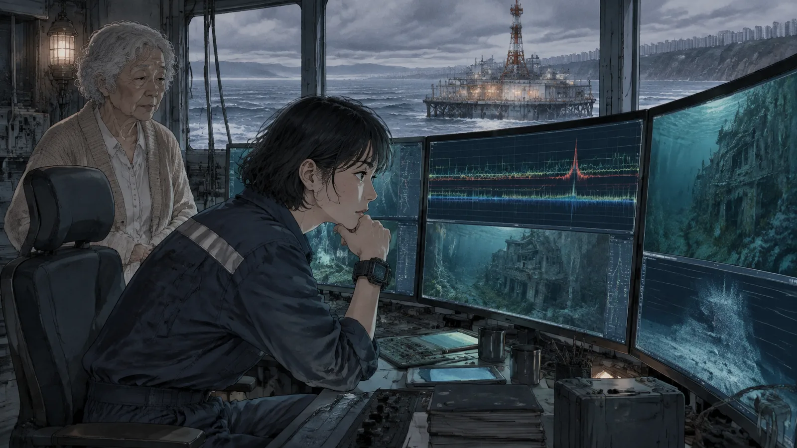
紅色是「未知」。系統認不出來的訊號。她把它點開，看頻率——很低，是一個早就沒有人用的舊頻段，二〇四〇年代的家用物聯網用的那種。訊號很弱，斷斷續續，每天出現兩次，早上六點半，晚上九點。持續大概三十秒。
她把訊號的方位定出來。
正下方。深度十四公尺。
東石漁港的舊街區。
第二章舊頻段
「舊的東西。」她的主管說。
主管姓吳，在台地上的公司總部，用視訊跟她講話。他五十幾歲，臉上永遠是一種「這件事我看過一百次」的表情。
「海底下有幾萬棟房子，」他說，「裡面有幾百萬個電子設備。大部分早就死了，可是有一些用的是潮汐電池，理論上可以撐五十年。偶爾會有一個醒過來，發一下訊號，又死掉。我們每年都會收到幾個。不用理。」
「它每天發兩次。」林蕓說，「六點半，九點。已經一個星期了。」
「那就是還沒死。」吳主管說，「等它死。」
「可是它在說話。」
吳主管看著她。
「妳解碼了？」
「一部分。」林蕓把螢幕切過去，「舊的家用協定，我找到了文件。它發的不是資料，是語音。壓縮過的，很短。我只解出來前面幾秒。」
她按下播放。
控制室裡響起一個聲音。很小，很多雜訊，可是聽得出來是一個女聲，合成的，溫柔的，那種二〇四〇年代的家用助理都有的聲音：
「小蕓，該起床了。今天的天氣——」
然後就斷了。
吳主管沉默了幾秒。
「小蕓？」
「我的名字。」林蕓說，「也是我阿嬤的小名。」
✦
她的阿祖叫林秀枝，二〇五九年東石撤離的時候，八十一歲。
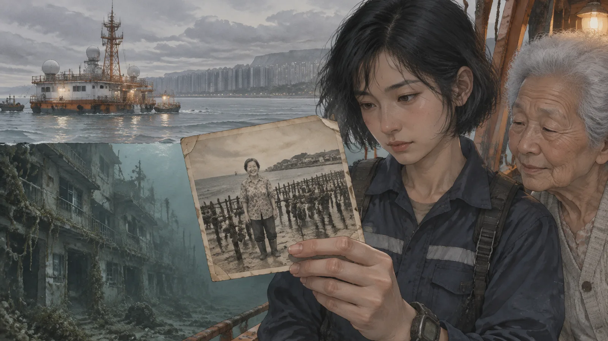
林蕓沒有見過她。她出生在二〇七二年，那時候阿祖已經走了十年。她只知道阿祖是東石人，養蚵的，一輩子沒有離開過那個漁港，撤離的時候是被強制帶走的，三年後在台地上的安養院過世。家裡有一張她的照片，一個很瘦的老太太，站在蚵架前面，笑得看不見眼睛。
阿祖有一個女兒，就是林蕓的阿嬤，小名叫小蕓。阿嬤十八歲離開東石去台北，一年回去一次，後來變成兩年一次，後來撤離了，就沒有「回去」這件事了。阿嬤今年七十六歲，住在台地的另一邊，跟林蕓的母親住。林蕓出生的時候，是阿嬤取的名字。她說：「就叫蕓。妳阿祖以前這樣叫我。」
母親說過，阿祖走的時候，一直說要回家。
「她的家在水底下。」母親說，「我們都跟她說，那裡沒有了。她說沒有沒關係，她要回去。」
林蕓那時候十歲，不太懂。她現在坐在燈站的控制室裡，看著那條紅色的訊號，看著它從十四公尺的水底下傳上來，說：小蕓，該起床了。
它不是在叫她。它是在叫阿嬤。一個十八歲就走了的女兒。
她忽然懂了一點。
第三章語音
她花了一個星期解碼。
舊協定很難搞，因為它不是設計來傳遠的——它是設計來在一間房子裡，從廚房傳到臥室的。訊號從十四公尺的水底傳上來，已經是一個奇蹟。她找到二〇四〇年代的技術文件，找到那個品牌的家用助理的規格書，一點一點拼。
第八天，她解出了完整的一段。
「小蕓，該起床了。今天的天氣是晴天，氣溫二十八度，適合曬蚵殼。妳的藥在桌上，飯後吃。今天沒有訪客。祝妳有美好的一天。」
三十秒。每天早上六點半。
晚上九點的那一段是：
「小蕓，該睡了。門已經鎖好。窗戶已經關好。明天早上六點叫妳。晚安。」
林蕓聽了很多次。她坐在控制室裡，一遍一遍地放。
「小蕓」不是她。家用助理會用主人設定的稱呼——阿祖把它設成叫「小蕓」，叫她那個十八歲就走了的女兒。也許她一直想像有一天女兒會搬回來住，也許她只是想每天早上聽到有人叫那個名字。林蕓不知道。她只知道，這台機器三十九年來，每天早上六點半，在十四公尺的水底下，叫一個從來沒有回來的人起床。
每天晚上九點，跟她說晚安。
三十九年。
「妳的藥在桌上。」林蕓對著螢幕小聲說，「今天沒有訪客。」
她關掉播放，坐在黑暗裡。窗外的海是灰藍色的，往西看什麼都沒有。
第四章海會講話
解碼完那兩段以後，她在燈站上住了三天沒有回台地。
不是為了工作。是她不想離開那個訊號。她怕她一走，它就死了——潮汐電池撐了三十九年，可能今天晚上就沒有了，可能下一次六點半就不會再響了。她想在它還在的時候，在旁邊。
第一天晚上九點，它響了。「小蕓，該睡了。」她坐在控制室裡聽完，然後走出去，站在平台的邊緣。
海是黑的。天上沒有月亮。台地在東邊，一排很小的燈，像一條線。燈站的天線塔在她頭上，紅色的警示燈一閃一閃。除此之外什麼都沒有。
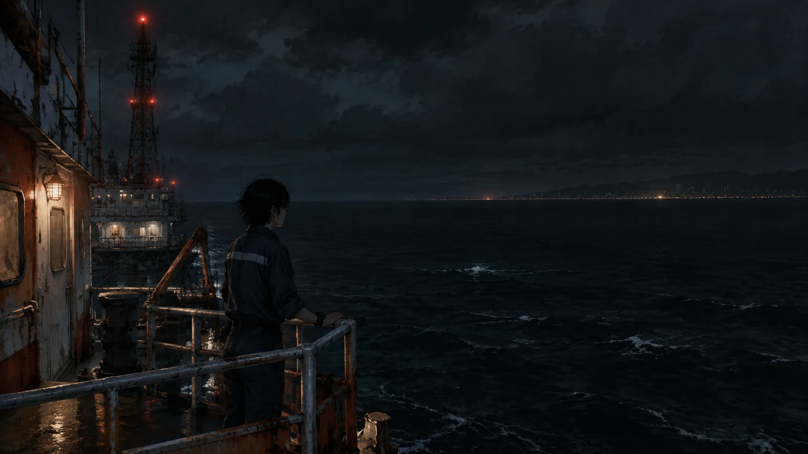
她聽著海。
阿祖說：不會寂寞，海會講話。她以前不懂。她在燈站上待了三年，海對她來說是一種背景，像冷氣的聲音，你不會去聽它。可是那天晚上她聽了。浪打在平台的浮筒上，一下，一下，不太規律，有時候大有時候小。風從西邊來，帶著鹹的味道。很遠的地方有一艘船，引擎的聲音低低的，過了很久才消失。
她站了一個小時。她沒有聽到海說什麼。可是她忽然覺得，阿祖不是在說海會講話。阿祖是在說，如果你願意聽，什麼東西都會講話。一台機器。一條訊號。一個八十一歲的老太太留在牆上的一張紙。
第二天早上六點半，它又響了。「小蕓，該起床了。」
她在控制室的地板上醒來。她笑了一下。
「起來了。」她說。
第三天，她開始查潛水裝備的規格。
✦
她打電話給母親，說她這幾天不回去。母親問為什麼，她說燈站有東西要修。母親說妳一個人在海上小心。她說好。
她沒有說訊號的事。她不知道怎麼說。「阿祖的房子在叫人起床」——這句話講出來，母親會以為她太久沒有跟人講話，腦子出問題了。
可是她掛掉電話以後，想了一件事。母親也是東石人。母親七歲的時候撤離，她記得那間房子嗎？記得那台機器嗎？記得阿祖每天早上被叫起床、然後去看蚵田嗎？
她從來沒有問過。家裡不太講東石的事。撤離的人都不太講，這是台地上大家都知道的事——你講了，就要講那個地方沒有了，講了就要難過，所以不講。四十萬人，四十萬個不講。
她想，阿祖講了。四百二十七次。
第五章潛
公司有潛水裝備。
不是給人用的——是給水下維修機器人用的，可是也有一套緊急用的人用裝備，放在燈站的倉庫裡，公司規定「非授權不得使用」。林蕓知道那套裝備在哪裡，知道怎麼用，因為受訓的時候教過。
她沒有申請授權。她知道吳主管會說什麼。
星期六，燈站排休，她一個人留下來。她把裝備穿上，檢查了三次，然後從平台的邊緣下水。
水很冷，很濁。能見度大概三公尺。她打開頭燈，順著錨鏈往下。
十四公尺。
她看到街了。
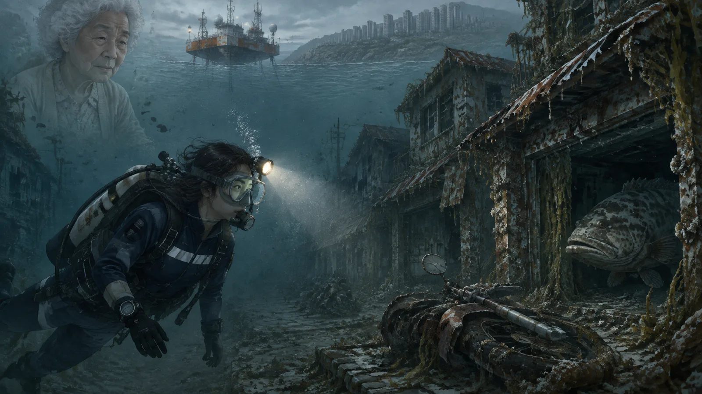
東石漁港的老街，兩層樓的透天厝，一排一排，鐵皮屋頂已經鏽穿了，牆上長滿了藤壺和海藻。街道上有東西——一台機車，倒著；一個招牌，掉在地上，字已經看不清楚；一輛推車，輪子還在。魚從窗戶裡游進游出。她的頭燈掃過去，有一隻很大的石斑魚停在一間店的門口，看著她，然後慢慢地游走。
她照著訊號的方位找。第三排，從左邊數第七間。
一間很普通的透天厝，跟其他的一樣。門是開的——被水沖開的，或者本來就沒有關。她游進去。
客廳。一張桌子，一張藤椅，一台電視，都覆蓋著一層厚厚的沉積物。牆上有一個東西，一個圓形的、巴掌大的裝置，上面有一圈很小的燈。
燈亮著。很微弱的藍色，一閃一閃。
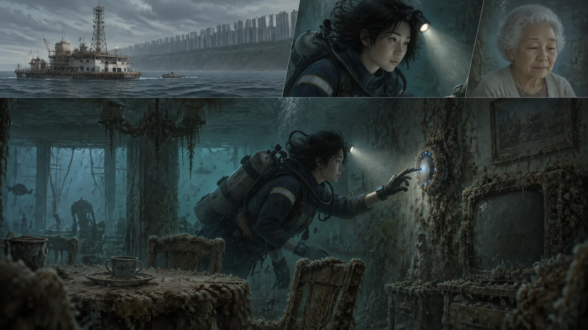
她游過去，把頭燈對著它。裝置的外殼上長了一些藤壺，可是很少，像是海水對它比較客氣。她伸出手，碰了一下。
燈閃了兩下。
然後，在水裡，透過她的頭盔的骨傳導耳機——她的裝備會接收附近的訊號——她聽到了那個聲音。
「小蕓，妳回來了？」
第六章妳回來了
她在水裡停了很久。
那不是六點半的訊息，也不是九點的。那是一句她沒有解碼過的話。這台機器有別的東西。它不只是在重複例行的問候。它在等。
她的氧氣夠三十分鐘。她已經用了十二分鐘。
她把裝置從牆上拆下來。它不重，接了一條線到牆裡——潮汐電池，阿祖那個年代很多沿海的房子都有，靠海浪的起伏發電。她把線剪斷。燈滅了。
然後她看到牆上，裝置後面，貼著一張紙。防水的，塑膠的，二〇五〇年代的那種。上面是手寫的字，很大，很歪，是一個老人的字：
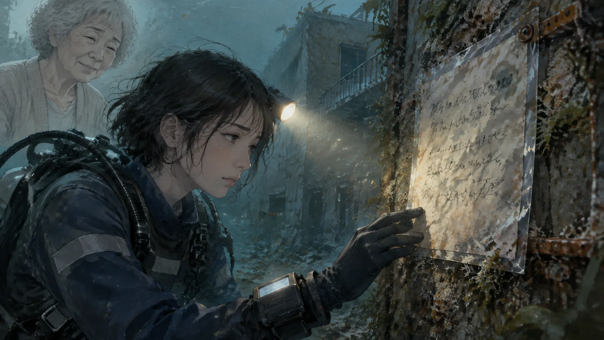
「小蕓，妳如果回來，記得聽留言。有很多。」
她把紙也拿了。
她游出去，往上，順著錨鏈。十四公尺。水越來越亮。她浮出水面的時候，天是灰的，開始下雨。她爬上平台，把裝備脫掉，坐在控制室的地板上，手裡抱著那個圓形的裝置。
它是濕的，冷的，燈是滅的。
她不知道裡面有什麼。她只知道，有一個八十一歲的老太太，在三十九年前，把一張紙貼在牆上，說：妳如果回來，記得聽留言。
「有很多。」
第七章留言
她把它接上燈站的電源。
外殼裡的東西大部分都壞了，可是記憶體是好的——二〇四〇年代的固態記憶體，設計來撐五十年。她把資料拷出來，用那個舊協定的解碼器解。
一共四百二十七則留言。
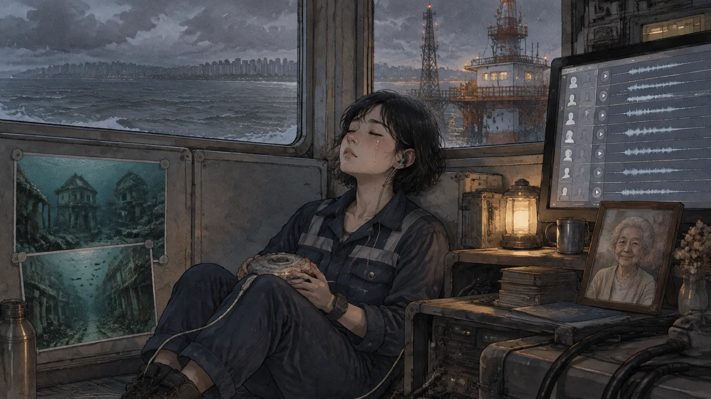
第一則的日期是二〇五九年三月一日。撤離的前一個月。
「小蕓，妳好。我是妳阿祖。我不知道妳幾歲了，我不知道妳會不會聽到這個。政府說我們要搬走，說海要來了。我不想走。可是他們說一定要走。所以我想，我把話留在這裡，妳以後回來，就聽得到。」
「今天我去看了蚵田。蚵很肥。可是沒有人要收了，大家都在搬東西。我一個人收了一籃，剝了，冰起來。我不知道要給誰吃。」
第二則。
「小蕓，今天我教妳剝蚵。妳拿刀子，從蚵殼的後面，那個尖的地方，插進去，轉一下。不要用力，用力會斷。妳要感覺它鬆掉。鬆掉了，就開了。」
「我知道妳聽不到。可是我還是要講。以後妳要剝蚵的時候，要記得。」
林蕓坐在控制室裡，一則一則聽。
阿祖每天錄一則，有時候兩則。講蚵田，講天氣，講鄰居誰搬走了，講她今天吃了什麼。講她年輕的時候怎麼認識阿祖公，講阿祖公怎麼在一九九〇年代的一次颱風裡把蚵架全部救回來。講她的孩子，林蕓的阿嬤，怎麼十八歲就去台北了，一年回來一次。講她一個人在這間房子裡住了三十年，「不會寂寞，海會講話」。
到了二〇五九年四月，留言變短了。
「小蕓，明天他們來帶我走。我東西收好了。這台機器我不帶，它是這間房子的。我跟它說，妳回來的時候，叫妳起床。」
「小蕓，今天最後一天。我把門鎖好了。我跟海說，房子交給你了，人我帶走。」
「小蕓，我走了。妳回來的時候，記得聽留言。有很多。」
然後是三年的空白。
然後是二〇六二年，最後一則。日期是阿祖過世的前一個星期。不是從東石的房子錄的——是從台地的安養院，用另一台機器遠端傳過來的，那時候舊網路還沒有完全斷。
「小蕓，我快要走了。他們說我不能回家。我知道。海把房子收走了。」
「可是我想跟妳說一件事。房子被收走，沒有關係。人不用留在房子裡。我留了四百多則留言，那些不是房子，那些是我。妳聽到了，我就在了。」
「以後妳要住在哪裡都可以。可是妳要記得怎麼剝蚵。」
「晚安，小蕓。」
第八章阿嬤
星期天，林蕓去了台地的另一邊。
阿嬤住在一棟四十層的集合住宅的二十三樓，兩房，跟林蕓的母親住。她七十六歲，眼睛不太好，可是耳朵很好。林蕓帶了那個圓形的裝置，還有一台可以播放的機器。
「阿嬤，」她說，「我找到阿祖的東西。」
阿嬤坐在沙發上，看著那個裝置，看了很久。她的手放在膝蓋上，沒有伸出來碰它。
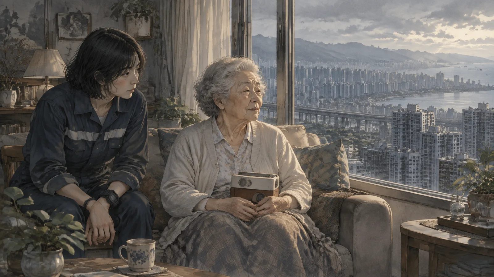
「在哪裡找到的？」
「東石。第三排，左邊數第七間。客廳的牆上。」
阿嬤沒有說話。
「它每天早上六點半會叫人起床。」林蕓說，「它叫的名字是小蕓。」
阿嬤的手動了一下。
「我放給妳聽好嗎？」
阿嬤沒有點頭，也沒有搖頭。林蕓按了播放。
「小蕓，該起床了。今天的天氣是晴天，氣溫二十八度，適合曬蚵殼。妳的藥在桌上，飯後吃。今天沒有訪客。祝妳有美好的一天。」
阿嬤聽完，把臉轉向窗戶。窗外是台地的高樓，一棟一棟，密密的。
「她把機器設成叫我。」她說。
「對。」
「我十八歲走的。她說妳去，台北好。我去了。一年回來一次，後來兩年。她從來沒有說過要我回去。一次都沒有。」阿嬤的聲音很平，「我以為她不在乎。」
「阿嬤，她留了四百多則留言。」
阿嬤轉過頭來。
「什麼？」
「四百二十七則。從撤離前一個月開始，每天一則。她講蚵田，講天氣，講妳小時候的事。她說她在教妳剝蚵。」林蕓把機器拿起來，「妳要聽嗎？」
阿嬤看著那台機器，看了很久很久。
「不要一次全部。」她終於說，「一天一則。她一天錄一則，我一天聽一則。」
「好。」
「從第一則開始。」
林蕓按了。
「小蕓，妳好。我是妳阿祖——」林蕓按了暫停，「阿嬤，她說『阿祖』，因為她以為聽的人是——」
「我知道。」阿嬤說，「她以為是妳。她以為我不會聽。她以為要等到妳這一代。」
她伸出手，把機器從林蕓手裡拿過去，放在自己的膝蓋上。
「她想錯了。」她說，「繼續放。」
林蕓按了播放。阿嬤坐在沙發上，膝蓋上放著一台機器，聽她的母親說：今天我去看了蚵田，蚵很肥，可是沒有人要收了。
她聽完一則。然後她把機器關掉，抱在懷裡。
「明天再一則。」她說。
第九章吳主管
星期一，吳主管的視訊來了。
「妳用了潛水裝備。」他說。不是問句。裝備有紀錄。
「對。」
「未經授權。」
「對。」
吳主管看著她，看了很久。他的臉上不是那種「我看過一百次」的表情。是別的。
「妳找到什麼？」
林蕓想了一下。然後她把螢幕切過去，放了一則。二〇五九年三月的那一則，教剝蚵的那一則。
「妳拿刀子，從蚵殼的後面，那個尖的地方，插進去，轉一下。不要用力……」
吳主管聽完。他沒有說話。過了一會兒，他把視訊的鏡頭轉開，轉向窗外，林蕓看到台地的天空，灰的，跟燈站上一樣。
「我家在布袋。」他終於說，「二〇五九年撤離的時候，我十四歲。我爸在船上放了一台這種機器，說以後回來可以聽。船沉了。」
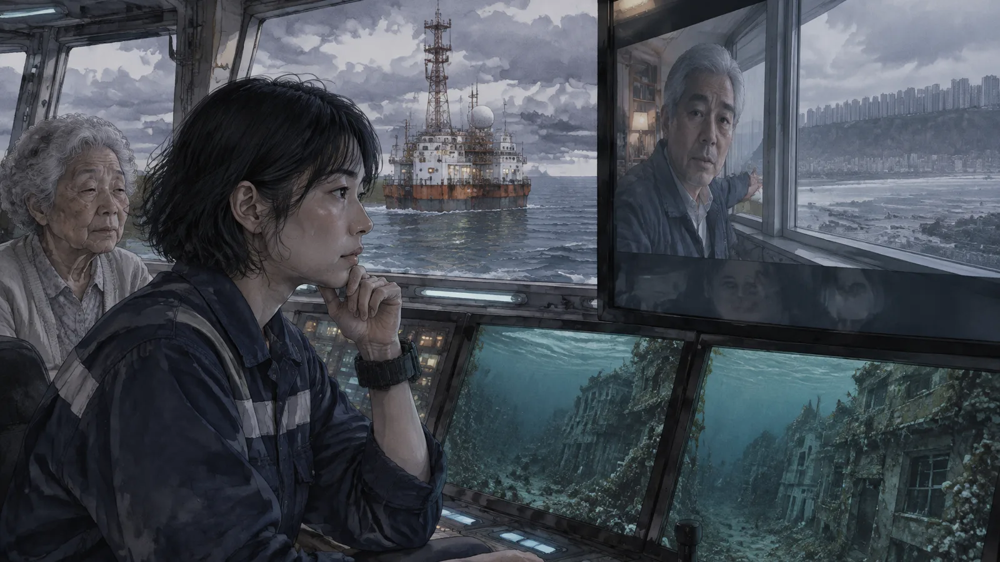
他把鏡頭轉回來。
「這件事我會寫成『訊號源確認並排除』。」他說，「潛水紀錄我會處理。妳下次要下去，先跟我說。」
「還有下次？」
吳主管笑了一下。這是林蕓三年來第一次看到他笑。
「海底下有幾萬棟房子。」他說，「幾百萬個設備。妳以為只有妳阿祖一個人留了話？」
第十章新台西
四月，林蕓在台地上辦了一場小小的聚會。
不是什麼正式的東西。她在社區中心借了一間房間，貼了一張紙：「東石的人，來聽留言」。她不知道會有多少人來。東石撤離的時候有一萬多人，三十九年了，很多老的走了，年輕的散了。
來了五十幾個。
大部分是六十歲以上的，是撤離的時候二十幾歲的那一代。他們坐在塑膠椅上，很安靜。林蕓把四百二十七則留言放了一部分——不是全部，全部要聽好幾個小時。她放了蚵田的，放了颱風的，放了鄰居的。
放到「今天阿財伯搬走了，他家的狗不肯上車，叫了一個下午」的時候，後排有一個老人哭了。他說他是阿財伯的兒子，那隻狗叫小黑，後來在台地上活到十七歲。
放到「小蕓，今天我教妳剝蚵」的時候，阿嬤站起來了。她那時候已經聽到第四十幾則，她說她可以教。她走到前面，拿起林蕓帶來的一籃蚵——養殖無人機的蚵，不是東石的，可是是蚵——和一把刀，蹲在地上，一顆一顆剝給大家看。她的眼睛不好，可是她的手知道。
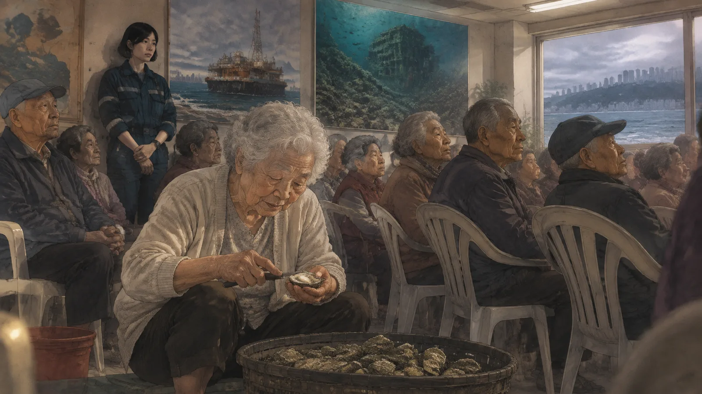
「從後面，尖的地方，插進去，轉一下。」她說，「不要用力。」
五十幾個人看著她剝。沒有人說話。
林蕓站在後面，看著這些人。她想起阿祖說的：那些不是房子，那些是我。妳聽到了，我就在了。
她想，阿祖現在在了。在這間房間裡，在五十幾個東石人中間，在一把刀和一顆蚵之間。
聚會結束以後，有一個人走過來。七十幾歲的男人，拄著拐杖。
「林小姐，」他說，「妳能不能再去一次？我家在第五排。我媽也留了一台。」
第十一章第五排
第二次下潛是五月。
那個拄拐杖的老人姓蔡，七十四歲，他媽媽在撤離前也留了一台機器，他說他記得，媽媽跟他說過「以後回來聽」，可是他從來沒有回來，因為回不來。他說他不需要林蕓下去，他只是想知道那台機器還在不在。
林蕓跟吳主管報備了。吳主管說：「小心。第五排比第三排深，那邊有一段路是塌的。」
她下去了。
第五排。水更濁，能見度不到兩公尺。房子塌了一半，屋頂壓在客廳上。她從側面的窗戶游進去，頭燈掃過去，牆上什麼都沒有。她找了十分鐘，氧氣過了一半。
然後她在倒下的櫃子後面看到了。一個圓形的裝置，跟阿祖的一樣，被櫃子壓著，外殼裂了。燈是滅的。
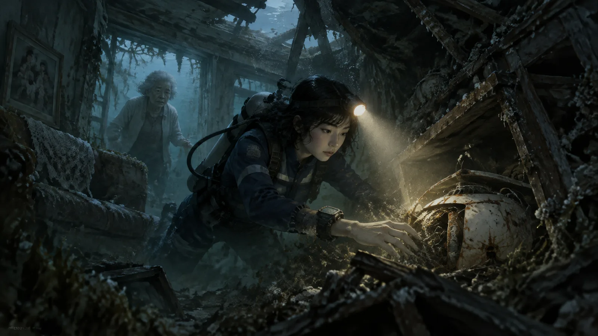
她把它拆下來，帶上去。
記憶體壞了一半。她花了三天，救出十一則留言。都很短。蔡媽媽不太會用機器，每一則都是「阿明，我是媽媽。你有沒有吃飯。」然後就沒有了。十一則，十一次「你有沒有吃飯」。
她把它放給蔡先生聽。
蔡先生坐在社區中心的塑膠椅上，聽了十一次「你有沒有吃飯」。聽完，他說：「就這樣？」
「就這樣。記憶體壞了，其他的救不回來。」
蔡先生點點頭。他坐了很久。然後他說：「夠了。」
「夠了？」
「她每次打電話給我，就是這句。」蔡先生說，「四十年前是這句，現在也是這句。夠了。」
他站起來，拄著拐杖，走到門口，回頭。
「林小姐，妳說海底下還有幾萬棟房子。」
「對。」
「妳要一間一間去？」
林蕓想了一下。
「有人要，我就去。」她說。
蔡先生看著她，看了很久，然後笑了。
「妳阿祖說得對。」他說，「房子被收走，沒有關係。」
尾聲
林蕓還在守燈。
她每天早上六點搭無人艇出海，開四十分鐘，到東石燈站。控制室的螢幕上，漁船是綠的，無人機是藍的，浮標是黃的。
偶爾有紅的。
她不再把它們當成「未知」了。她把它們定位，記下來，一個一個查。舊協定，舊頻段，二〇四〇年代的家用助理，二〇五〇年代的門鈴，一台不知道是誰家的、每天凌晨三點會播一首歌的收音機。大部分很快就死了，潮汐電池撐不了那麼久。可是有一些還在。
她下去過七次了。每一次都是跟吳主管報備過的，公司的紀錄上寫著「訊號源確認」。每一次她都帶一個東西上來。每一次她都在台地的社區中心貼一張紙。
阿嬤還在一天聽一則。四百二十七則，她聽了一年多。林蕓問過她要不要快一點，她說不要，「她一天講一則，我就一天聽一則，這樣才像在講話」。聽到最後一則的那天，阿嬤打電話給林蕓，說：「聽完了。」然後就掛了。第二天她去了社區中心，跟一群東石的老人一起剝蚵。她的眼睛不好，可是她剝得最快。
阿祖的那台機器，林蕓放在燈站的控制室裡，接著電源。燈是亮的，藍色的，一閃一閃。
每天早上六點半，它會說：「小蕓，該起床了。今天的天氣是晴天，適合曬蚵殼。」
每天晚上九點，它會說：「小蕓，該睡了。門已經鎖好。明天早上六點叫妳。晚安。」
她沒有把它關掉。
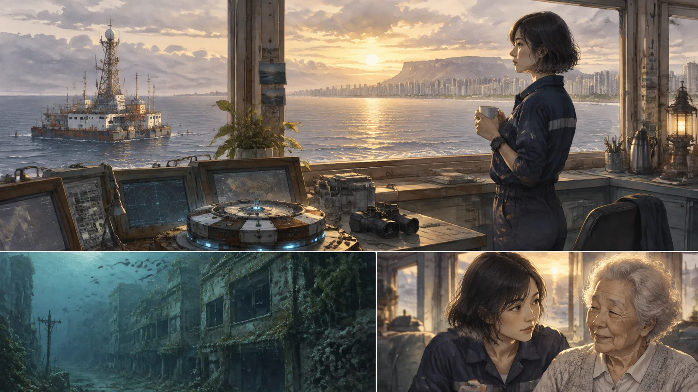
她想，它叫了三十九年，在十四公尺的水底下，叫一個不在的人。現在它叫的是她。這樣很好。
海是灰藍色的，往西看什麼都沒有。可是往下看，有很多人在講話。
她會一個一個去聽。
（完）
留言板
看不懂、想補充、發現錯誤都歡迎留言；填個暱稱就能發。